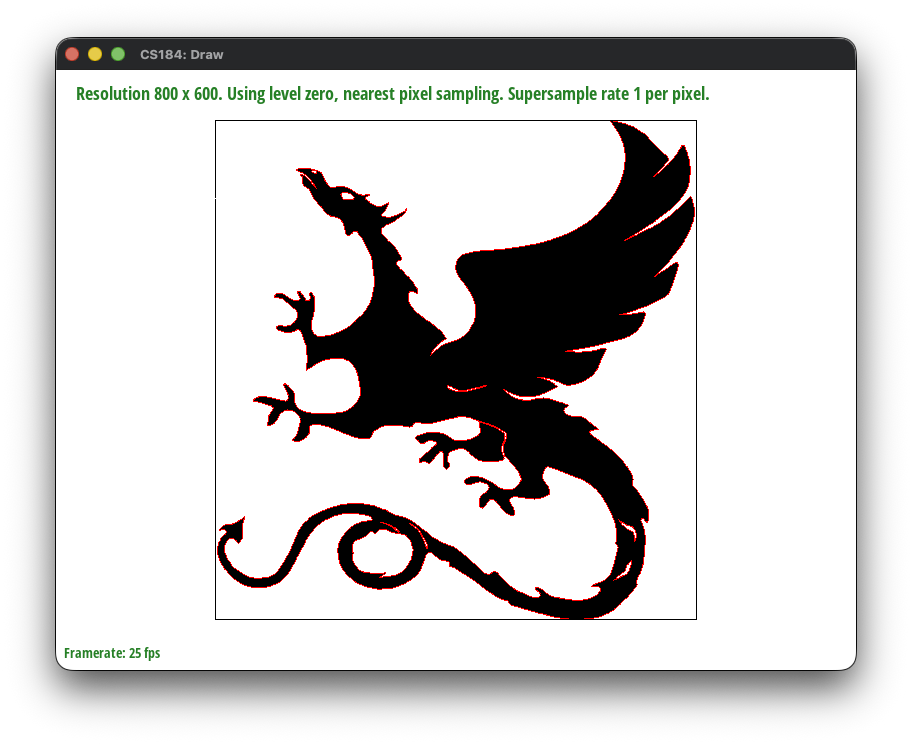
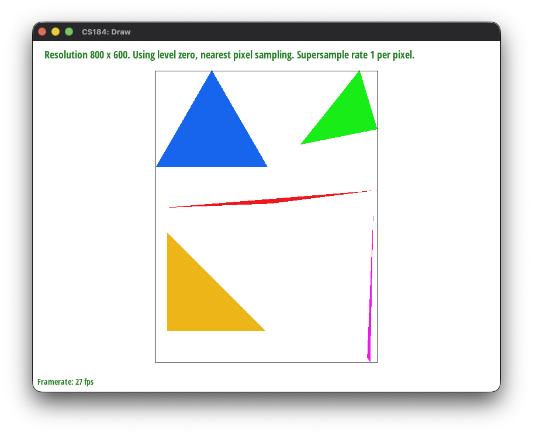
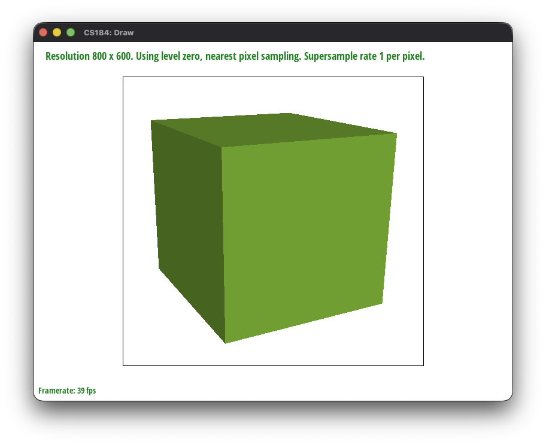
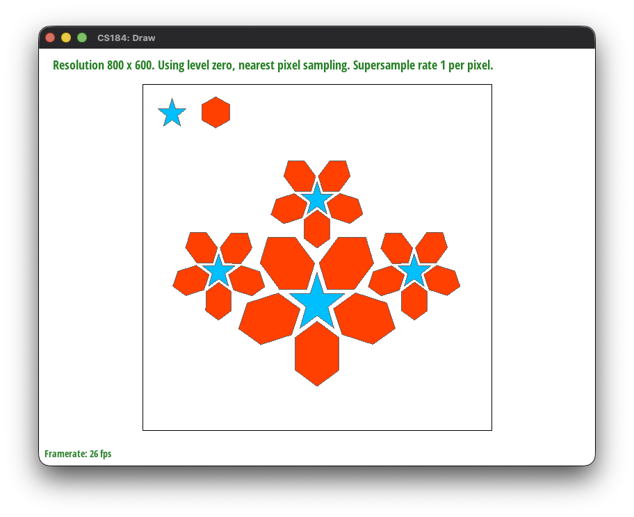
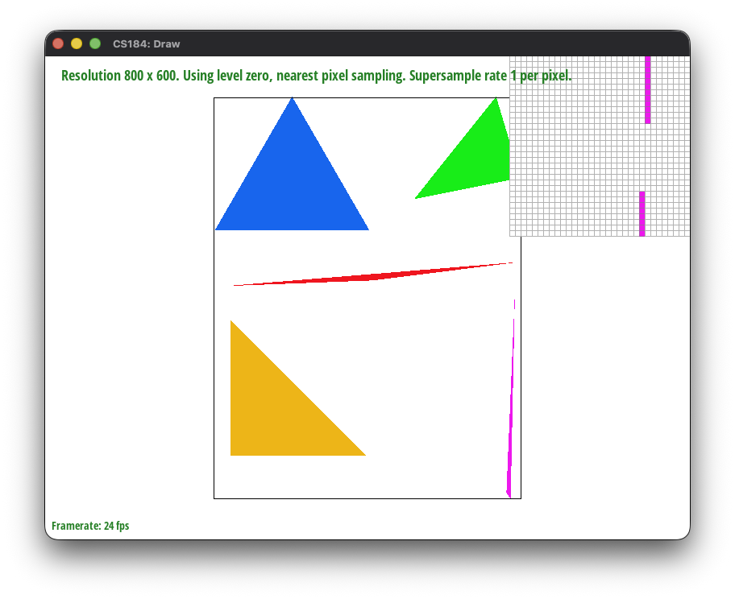

CS184/284A Fall 2026 Homework 1 Write-Up
Overview
In this homework, we implemented parts of a 2D vector graphics rasterizer. For Task 2, we extended triangle rasterization with supersampling to reduce aliasing along triangle boundaries. Instead of deciding whether a triangle covers a pixel using only one sample, the rasterizer stores several samples inside each pixel and averages them when producing the final framebuffer.
Task 1: Drawing Single-Color Triangles
Walkthrough of Our Triangle Rasterization
Rasterizing a triangle means deciding which pixels of the framebuffer it covers. We do this in two stages: first narrow the search down to the pixels that could possibly be covered, then run a coverage test on each of those candidates.
1. Bounding box
Testing every pixel in the framebuffer would be wasteful, since a triangle usually occupies a small part of the screen. Instead we take the minimum and maximum \(x\) and \(y\) over the three vertices and round them outward to whole pixels:
Rounding outward matters because vertices land at arbitrary floating-point positions. Taking the floor of the minimum and the ceiling of the maximum guarantees that the integer box still fully contains the triangle, so we can never clip off a sliver of it. We then iterate over the half-open ranges \(x \in [x_{\min}, x_{\max})\) and \(y \in [y_{\min}, y_{\max})\). The ranges are half-open because pixel \((x,y)\) owns the unit square \([x, x{+}1) \times [y, y{+}1)\), so the last pixel that can overlap the triangle has index \(\lceil \max \rceil - 1\).
2. Sample position
For each candidate pixel we test a single sample at the center of the pixel rather than at its corner:
Sampling at the center means a pixel is filled when the triangle covers the middle of it, which is a better estimate of coverage than testing a corner shared between four neighboring pixels.
3. The edge function
To decide whether the sample is inside the triangle we use a helper that evaluates, for a directed edge running from \(A\) to \(B\) and a query point \(P\), the quantity
This is the \(z\)-component of the 2D cross product \((B - A) \times (P - A)\). What makes it useful is its sign: it is positive when \(P\) lies on one side of the infinite line through \(A\) and \(B\), negative when it lies on the other, and exactly zero when \(P\) lies on the line itself. Its magnitude is twice the area of triangle \(ABP\), a fact we come back to in Task 4.
4. Point-in-triangle test
We evaluate the edge function for the three directed edges \(v_0 \to v_1\), \(v_1 \to v_2\), and \(v_2 \to v_0\). Because these three edges traverse the boundary consistently in one rotational direction, a point inside the triangle lies on the same side of all three lines, which means all three edge values share a sign. A point outside the triangle is on the wrong side of at least one edge, so at least one value disagrees.
Rather than requiring the values to be positive, we accept a sample when all three are non-negative or all three are non-positive:
This handles winding order for free. A
counter-clockwise triangle produces all-positive values for interior
points, while a clockwise triangle produces all-negative ones. Checking
both cases means we never have to detect the winding or reorder the
vertices, which is why basic/test6.svg renders correctly
whichever order its vertices are given in.
Using the non-strict comparisons \(\ge\) and \(\le\) rather than strict ones also means that \(e_i = 0\) counts as covered, so a sample landing exactly on an edge is drawn. This satisfies the requirement that boundary samples be filled and guarantees that no edge of the triangle is left un-rasterized.
5. Filling
When the test passes we call fill_pixel(x, y, color), which
writes the triangle's color into the buffer at index
y * width + x. Samples that fail the test are left alone
and keep the white background they were cleared to.
Why This Is No Worse Than Checking Every Sample in the Bounding Box
The baseline to beat is: compute the smallest rectangle that contains the entire triangle, then test every sample inside it. Our algorithm is that algorithm, so its cost is the same rather than larger. Concretely, three properties hold.
We never test a sample outside the bounding box. The loop bounds are derived only from the vertex extrema, and \([\lfloor \min \rfloor, \lceil \max \rceil)\) is the smallest half-open integer interval containing \([\min, \max]\). The set of pixels we visit is therefore exactly the set whose unit squares intersect the triangle's real-valued bounding box, with no padding beyond the rounding that correctness requires.
We never test a sample twice. The two nested loops run over distinct integer coordinates, and at one sample per pixel each candidate is evaluated exactly once.
The work per sample is constant. Each sample costs three edge-function evaluations, each of which is two multiplications and five subtractions, followed by at most six short-circuited comparisons. There is no allocation, no per-sample setup, and no work that grows with the size of the triangle.
Multiplying these together, the total cost is proportional to the area of the bounding box in pixels, which is precisely the cost of the baseline. It can never exceed it.
The comparison worth making is against the naive alternative of testing
every pixel in the framebuffer, which costs
\(\Theta(\text{width} \times \text{height})\) per triangle no matter how
small the triangle is. At the 1600×1200 resolution used for
test4.svg, a triangle covering a few hundred pixels would
still trigger nearly two million coverage tests. Restricting the loops
to the bounding box makes the per-triangle cost proportional to the
triangle's own screen footprint instead of the screen's size.
To be precise about the claim: we did not do anything to be faster than the bounding-box approach. There is no incremental update of the edge functions along a scanline, no per-scanline span clipping, and no block-level early rejection. The claim is that our cost equals the bounding-box cost, not that it improves on it.
Results
With the rasterizer in place, the four single-color test files render correctly. All four are shown at 800×600 with the default viewing parameters and one sample per pixel.

basic/test3.svg
basic/test4.svg
basic/test5.svg
basic/test6.svgPixel Inspector: basic/test4.svg

basic/test4.svg with the pixel inspectorThe inspector is centered on the thin magenta triangle along the right side of the scene, which is the most revealing part of this file. Because we take a single sample per pixel, every pixel in the magnified view is either fully magenta or fully white, with no intermediate shades. The sliver is only about one pixel wide, so instead of a continuous line it renders as short vertical runs of pixels that jump sideways by a whole pixel at a time, and it breaks apart entirely in the stretches where the triangle is narrow enough to pass between pixel centers without covering any of them.
This is the aliasing that the supersampling in Task 2 addresses. The coverage test itself is correct here: every pixel whose center falls inside the triangle is filled, and every pixel whose center falls outside is not. The problem is that one sample per pixel is too coarse to represent a shape thinner than a pixel, so the information is lost before it ever reaches the framebuffer.
Task 2: Antialiasing by Supersampling
Walkthrough of Our Triangle Rasterization
The rasterizer maintains a sample buffer with
width * height * sample_rate color values. For every
triangle, we first compute its axis-aligned bounding box and clamp
that box to the framebuffer. This avoids testing pixels that cannot
be covered by the triangle.
For each pixel in the bounding box, the implementation places samples on a regular square grid. For example, a sample rate of 4 uses a 2-by-2 grid, while a sample rate of 16 uses a 4-by-4 grid. Each sample is located at the center of its subcell:
To determine whether a sample is inside the triangle, we evaluate the 2D cross product for all three directed edges. A sample is covered when all three edge tests have the same sign. Checking both the all-positive and all-negative cases allows the test to work for either triangle winding order.
Covered samples receive the triangle color, while uncovered samples retain their previous value. Since the sample buffer is initialized to white when the buffers are cleared, uncovered samples represent the white background.
Why This Is No Worse Than Checking Every Sample in the Bounding Box
This algorithm is no worse than one that checks every sample inside the triangle's bounding box. The loop bounds are the bounding box rounded outward to whole pixels (floor of the minimum, ceiling of the maximum) and then clamped to the framebuffer, so every pixel the triangle can touch is visited and no sample outside the box is ever tested. Within that range, each sample is tested exactly once with a constant amount of work (three edge evaluations). The total cost is therefore proportional to the number of pixels in the clamped box times the sample rate. That is the cost of the bounding-box method itself, and the clamping means it can only be smaller, never larger.
Resolving the Samples
After all SVG elements have been rasterized, the resolver computes the average color of the samples belonging to each output pixel:
The averaged red, green, and blue values are clamped to the range \([0,1]\) and converted to 8-bit values before being written to the target framebuffer. A boundary pixel therefore becomes a mixture of the triangle color and the background instead of an abrupt one-color transition.
Effect of the Sample Rate
At a sample rate of 1, each pixel has only one sample, so diagonal edges appear jagged when the edge passes through a pixel. Increasing the rate to 4 uses a 2-by-2 grid and gives a better estimate of the triangle's coverage. A rate of 16 uses a 4-by-4 grid and generally produces smoother edges.
The tradeoff is that higher sample rates require more edge tests, more memory, and more rasterization time. The improvement eventually becomes less noticeable because the result is still displayed at the original framebuffer resolution.
The current implementation assumes that the sample rates used for the square grid are perfect squares, such as 1, 4, 9, or 16. This matches the usual sample rates used for the assignment.
Testing our implementation
We used test4.svg to view different supersample rates.


As the sample rate increases from 1 to 16, the jagged, stair-stepped edges seen at a sample rate of 1 are progressively smoothed out. By a sample rate of 16, edges blend gradually into the background instead of transitioning abruptly, confirming that supersampling reduces aliasing.
Task 3: Transforms
This section is reserved for the Task 3 description and results.
Task 4: Barycentric Coordinates
This section is reserved for the Task 4 description and results.
Task 5: Pixel Sampling for Texture Mapping
Texture mapping assigns each triangle vertex a UV coordinate in \([0,1]^2\) that points into a texture image. When the rasterizer shades a covered sample, it interpolates the UV coordinate across the triangle using barycentric weights, but that interpolated coordinate almost never lands exactly on a texel center. Pixel sampling is the problem of turning that continuous UV coordinate into a single color, by choosing which texel (or combination of texels) to read.
Implementation Overview
rasterize_textured_triangle reuses the bounding-box and
supersampling-grid structure from Tasks 2 and 4: for every sample
inside the clamped bounding box, we compute barycentric coordinates
\((w_0, w_1, w_2)\) with respect to the triangle's three vertices
(computed in double precision, since single-precision edge tests were
occasionally off by a pixel at triangle boundaries). Covered samples
interpolate the vertex UVs the same way Task 4 interpolates vertex
colors:
That UV, together with the current pixel-sampling method (toggled with
the 'P' hotkey), is packed into a SampleParams
struct and passed to Texture::sample, which dispatches to
either sample_nearest or sample_bilinear.
At this stage we always sample from mip level 0 (the full-resolution image). Selecting a mip level based on the screen-space footprint of the texture lookup is implemented in Task 6.
Nearest-Neighbor Sampling
sample_nearest maps the continuous UV coordinate directly
onto a texel index, rounding to the closest one:
so that \(u=0\) lands exactly on the first texel and \(u=1\) lands exactly on the last one. The index is clamped to the valid range and that single texel's color is returned unchanged. This makes nearest sampling fast, but it produces a piecewise-constant color across each texel's footprint, which looks blocky whenever the texture is magnified.
Bilinear Sampling
sample_bilinear uses the same continuous coordinate
\(x = u\cdot(\mathrm{width}-1)\), \(y = v\cdot(\mathrm{height}-1)\), but
instead of rounding, it takes the four texels surrounding that point
and blends them by their distance to it:
where \(s\) and \(t\) are the fractional parts of \(x\) and \(y\). This costs four texture reads instead of one, but produces a smooth gradient across texel boundaries instead of a hard edge.
Comparison: Nearest vs. Bilinear
We used the pixel inspector on svg/texmap/test2.svg and
zoomed into the map's latitude/longitude grid lines, where the texture
is magnified enough that individual texels are clearly visible.


The difference between nearest and bilinear is largest wherever the texture is magnified — where a single triangle covers many screen pixels but only a small range of UV space, such as the grid lines above. There, nearest sampling repeats the same texel across a block of pixels, producing hard, blocky edges, while bilinear blends neighboring texels into a smooth gradient. Increasing the sample rate from 1 to 16 barely changes this gap, because supersampling only affects how triangle *coverage* is estimated at silhouette edges, it does not change how a single texture lookup is filtered. Where the texture is not magnified (roughly one texel per pixel or smaller), the two methods look nearly identical, since there is little room for a texel-sized block to be visible either way.
Task 6: Level Sampling with Mipmaps
This section is reserved for the Task 6 description and results.
Task 7: Extra Credit
This section is reserved for the optional extra-credit description.